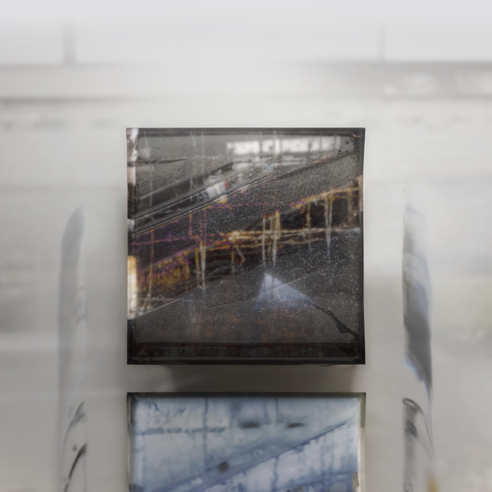
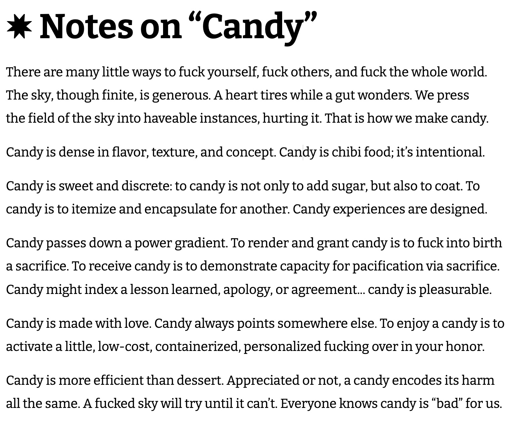

Candy Demos: for Brown University MFA Application (Dec 15, 2023)

1. Baby, Just!
2. From Din
3. Frozen Villa Unflinching
5. Pawn Montage (Hero's Cut)
7. Mezzo (Sours Cut)
8. Clutch (Lover's Cut)
9. Licorice
11. Bleary Everlasting
13. Runs Clear
